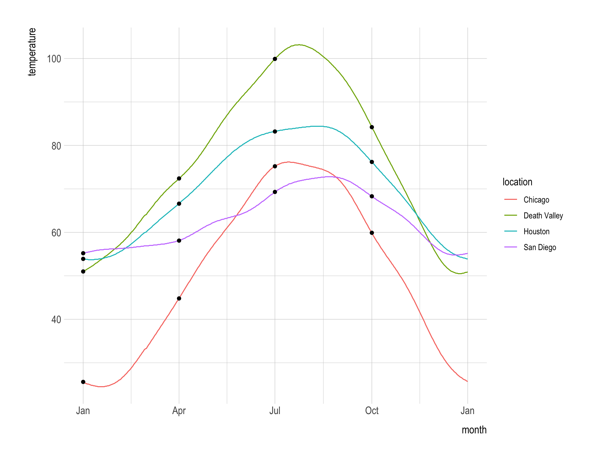
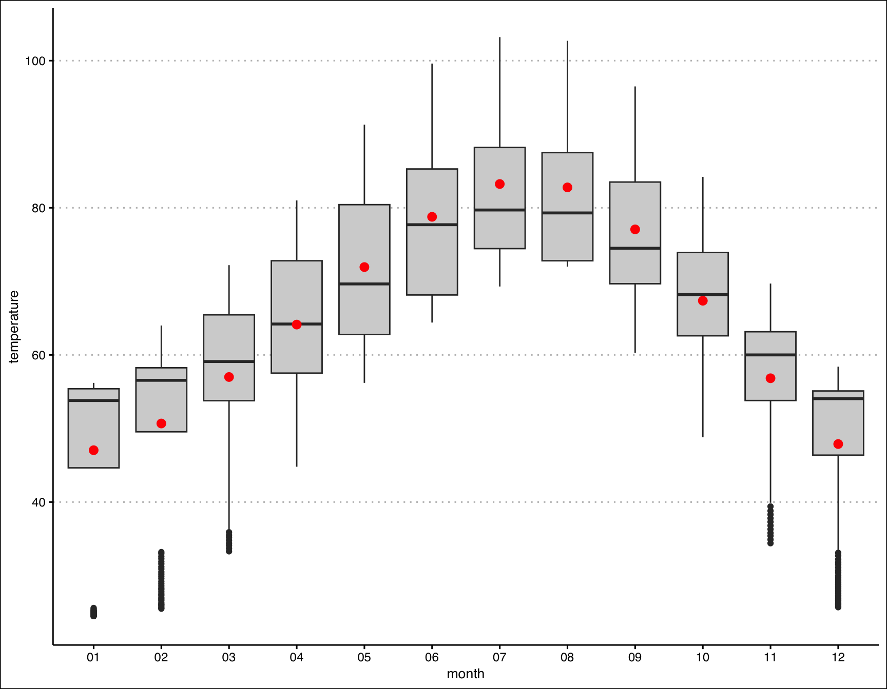
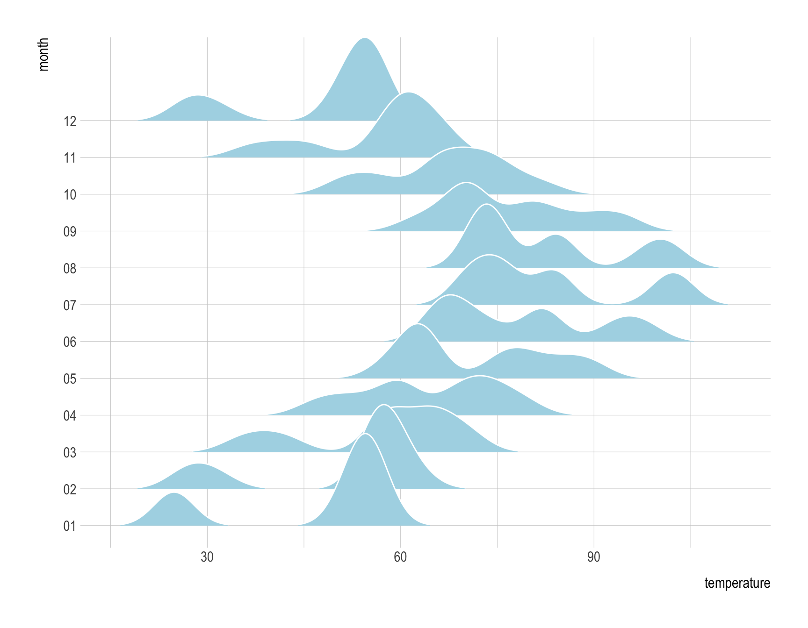
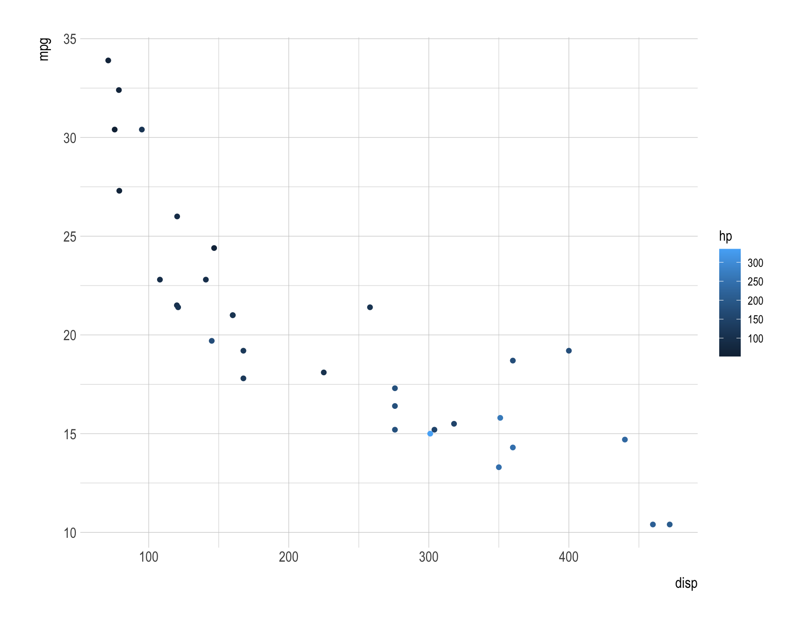
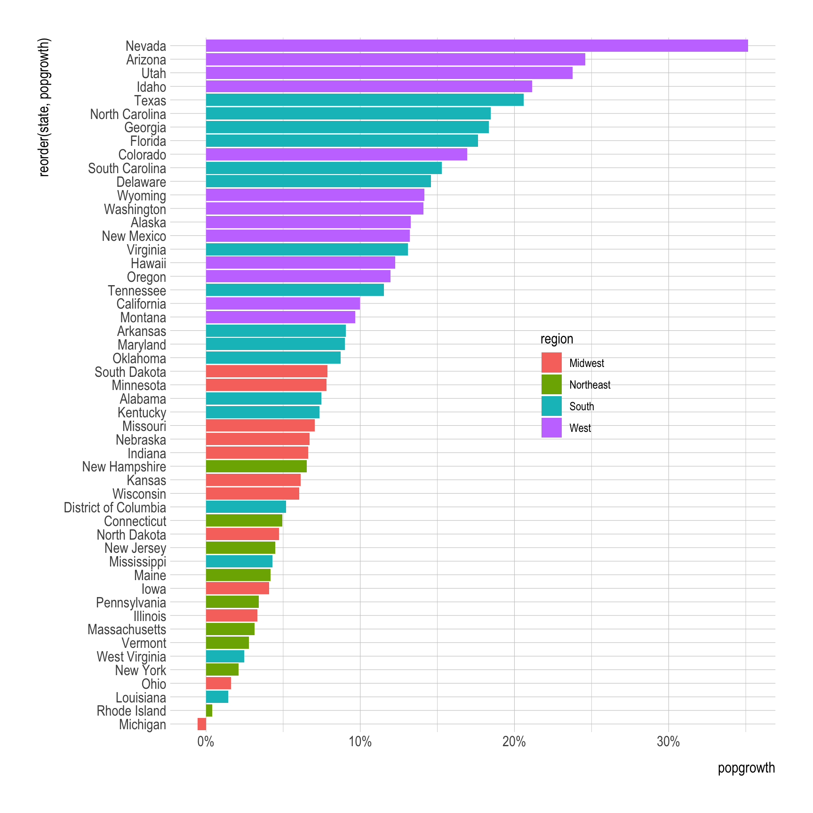
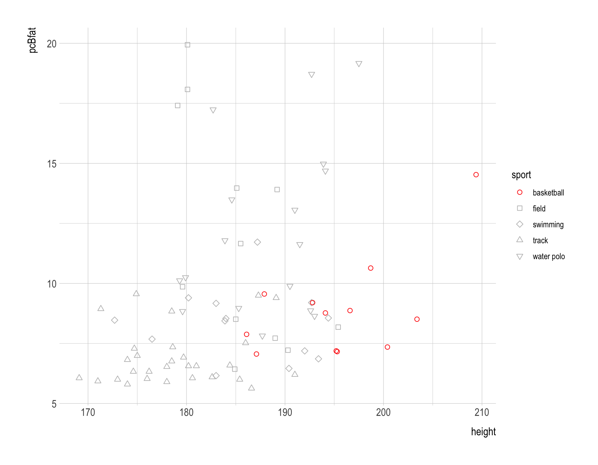
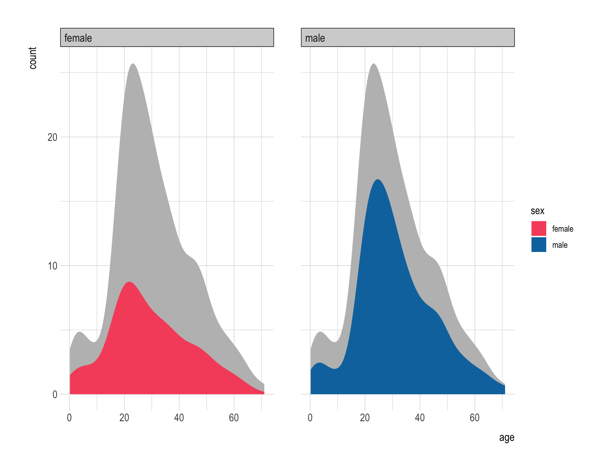
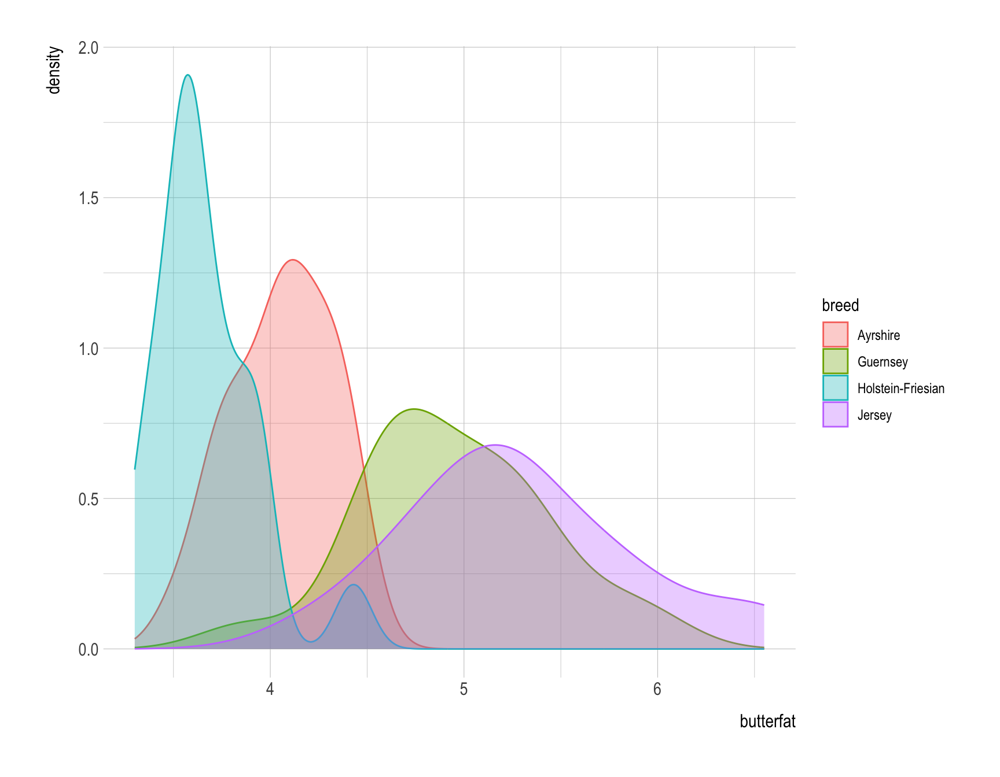
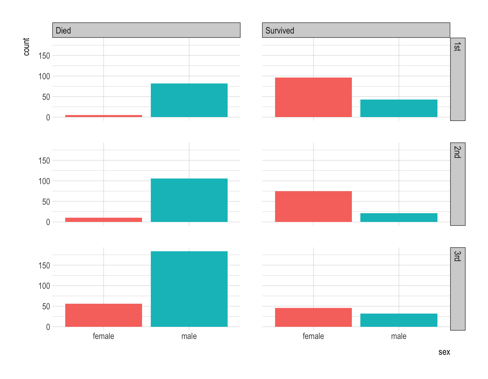
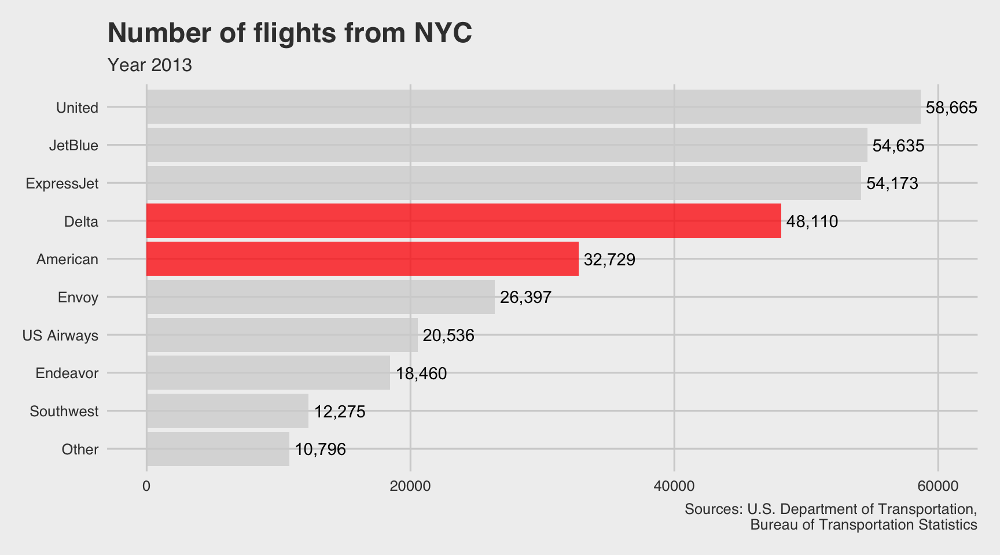

ncdc_temp <- read_csv(
'https://bcdanl.github.io/data/ncdc_temp_cleaned.csv')Advanced ggplot Visualization
Homework 1 and Classwork 7
Homework 1
Question 1
ncdc_temp |>
ggplot(aes(x = date, y = temperature)) +
geom_line(aes(color = location)) +
geom_point(data = filter(ncdc_temp,
month %in% c("01", "04", "07", "10"),
day == 1)
) +
scale_x_date(breaks = ymd(c('0000-01-01',
'0000-04-01',
'0000-07-01',
'0000-10-01',
'0000-12-31')),
labels = c("Jan", "Apr", "Jul", "Oct", "Jan")) +
scale_y_continuous(breaks = seq(20,100,20)) +
labs(x = "month")
Question 2
ncdc_temp |>
ggplot(aes(x = month,
y = temperature)) +
geom_boxplot(fill = 'lightgrey') +
stat_summary(fun = mean,
color = 'red') +
theme_clean()
Question 3
rel_min_heightaesthetic sets a percent cutoff relative to the highest point of any of the density curves.
ncdc_temp |>
ggplot(aes(x = temperature,
y = month)) +
geom_density_ridges(fill = 'lightblue',
color = 'white',
rel_min_height = .01,
scale = 2.5)
Question 4
mtcars |>
ggplot(aes(x = disp, y = mpg,
color = hp)) +
geom_point()
Question 5
popgrowth_df <- read_csv(
'https://bcdanl.github.io/data/popgrowth.csv')
popgrowth_df |>
ggplot(aes(x = popgrowth,
y = reorder(state, popgrowth),
fill = region)) +
geom_col() +
scale_x_continuous(labels = scales::percent) +
theme(legend.position = c(.67,.5))
Question 6
male_Aus <- read_csv(
'https://bcdanl.github.io/data/aus_athletics_male.csv')
male_Aus |>
ggplot(aes(x = height, y = pcBfat,
shape = sport,
fill = sport,
color = sport)) +
geom_point(size = 2) +
scale_shape_manual(values = c('water polo' = 6,
'track' = 2,
'swimming' = 5,
'field' = 0,
'basketball' = 1
)) +
scale_fill_manual(values = c('red', rep('grey',4))) +
scale_color_manual(values = c('red', rep('grey',4)))
Question 7
titanic <- read_csv(
'https://bcdanl.github.io/data/titanic_cleaned.csv')
titanic_male <- titanic |>
mutate(sex = 'male')
titanic_female <- titanic |>
mutate(sex = 'female')
titanic_trick <- rbind(titanic_male,
titanic_female)
titanic |>
ggplot(aes(x = age, y = stat(count))) +
geom_density(data = titanic_trick, fill = 'grey', color = NA) +
geom_density(aes(fill = sex), color = NA) +
facet_wrap(~sex) +
scale_fill_manual(values= c('#f6546a', '#0a75ad'))
Question 8
cows_filtered <- read_csv(
'https://bcdanl.github.io/data/cows_filtered.csv')
cows_filtered |>
ggplot(aes(x = butterfat, fill = breed, color = breed)) +
geom_density(alpha = .33)
Classwork 7
Question 1
titanic <- read_csv(
'https://bcdanl.github.io/data/titanic_cleaned.csv')
titanic |>
mutate(survived = ifelse(survived == T, 'Survived', 'Died')) |>
ggplot(aes(x = sex, fill = sex)) +
geom_bar(show.legend = F) +
facet_grid(class ~ survived)
Question 2
nyc_flights <- read_csv(
'https://bcdanl.github.io/data/nyc_flights_grouped.csv')
# unique(nyc_flights$carrier_full)
nyc_flights |>
count(carrier_full) |>
mutate(carrier_full = ifelse(carrier_full == 'other', 'Other', carrier_full),
carrier_full = factor(carrier_full),
carrier_full = reorder(carrier_full, n)) |>
ggplot(aes(x = n, y = carrier_full,
fill = carrier_full)) +
geom_col(show.legend = F,
alpha = .75) +
geom_text(aes(label = scales::comma(n)),
hjust = -.1) +
scale_fill_manual(values = c(rep('lightgrey',5), rep('red', 2), rep('lightgrey',3)
)) +
scale_x_continuous(limits = c(0,60000)) +
labs(title = 'Number of flights from NYC',
subtitle = 'Year 2013', y = '',
caption = 'Sources: U.S. Department of Transportation,\nBureau of Transportation Statistics') +
theme_fivethirtyeight()